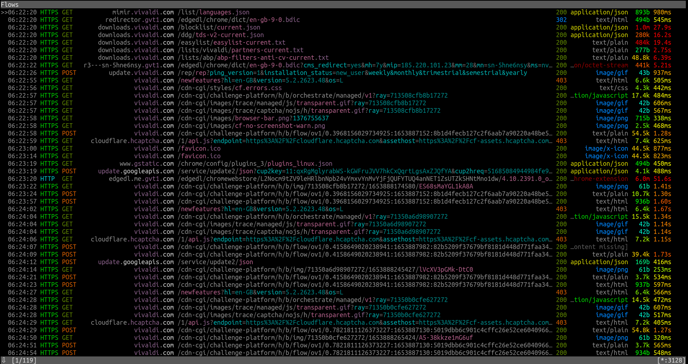

Vivaldi
Vivaldi é um navegador web completo e personalizável feito por alguns dos antigos desenvolvedores do Opera (já que eles estavam insatisfeitos com a direção que o Opera estava tomando). Assim como o Opera moderno, ele é baseado no Chromium.
Versão testada: 5.2.2623.48
Nível de Spyware: Alto
Vivaldi faz cerca de 119 requisições na inicialização e continua a fazer conexões não solicitadas depois. O anti-privacidade Bing é o mecanismo de pesquisa padrão.
Mesmo se você desativar tudo em "Serviços do Google" e "Extensões do Google" em "Privacidade" nas configurações, ele ainda fará requisições automáticas com o Google. Também faz conexões após a primeira inicialização para mirmir.vivaldi.com e downloads.vivaldi.com.
As páginas web da Vivaldi são protegidos pela Cloudflare
Você será bloqueado se estiver usando o Tor e será conectado a hcaptcha.cloudflare.org. Você pode desabilitar isso simplesmente alterando a página inicial.
Vivaldi lhe atribui um ID único
De acordo com a Política de Privacidade: "Quando você instala o navegador Vivaldi ("Vivaldi"), cada perfil de instalação recebe um ID de usuário exclusivo que é armazenado em seu computador. Vivaldi enviará uma mensagem usando HTTPS diretamento para nossos servidores localizados na Islandia a cada 24 horas contendo este ID, versão, arquitetura de CPU, resolução de tela e tempo desde a última mensagem. Anonimizamos os endereço IP dos usuários do Vivaldi removendo o último octeto do endereço IP do seu cliente Vivaldi e armazenamos a localização aproximada resolvida após usar um geoip local. O objetivo desta coleção é determinar o número total de usuários ativos e sua distribuição geográfica".[1]
Não pode ser compilado a partir do código-fonte
"No entanto, é apenas o nosso trabalho do Chromium que é encontrado em https://vivaldi.com/source. Se você compilar e executá-lo, nada será exibido, pois a interface do usuário HTML/CSS/JS está ausente. Essa interface de usuário final, que são cobertos pelo EULA (no qual também incluímos uma versão compilada do nosso Chromium modificado)."[2]